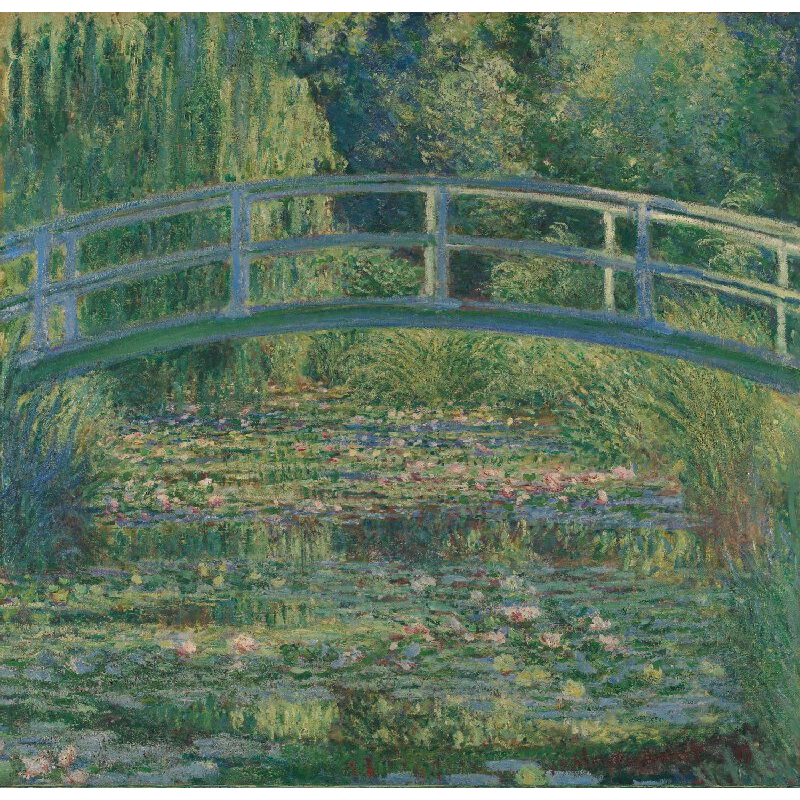

The Starry Night
Vincent Van Gogh
Van Gogh's night sky is a field of roiling energy. Below the exploding stars, the village is a place of quiet order. Connecting earth and sky is the flamelike cypress, a tree traditionally associated with graveyards and mourning. But death was not ominous for van Gogh. "Looking at the stars always makes me dream," he said, "Why, I ask myself, shouldn't the shining dots of the sky be as accessible as the black dots on the map of France? Just as we take the train to get to Tarascon or Rouen, we take death to reach a star."